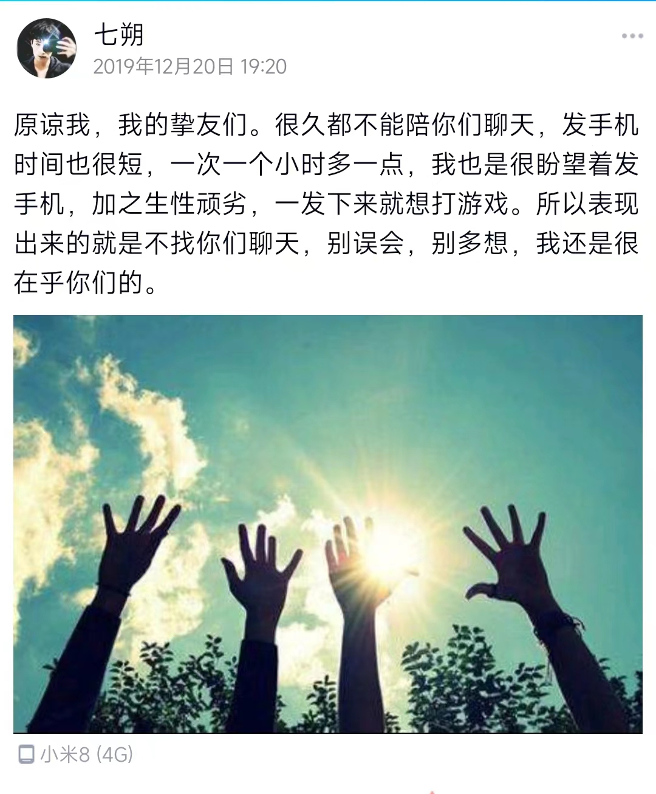

序
本来就是一个多愁善感的人，在高中时就写下了不少矫情的长长短短。生活中遇到和谁谁谁的精彩故事，或者发生一件刻骨铭心的事情，就会忍不住的用文字记录下来。
加之在某位的催促之下(你写了那么多别人，就是不写我，你是不是觉得不可能跟我断了联系啊)，我终于敲动键盘，写下了这一篇文章。其实最主要的还是自己想写，因为确实值得记录。
初识
我和她是在2013年认识的，因为一次学校的扩建。镇里有俩所初中，一个L中，是我一开始就在的学校，一个Z中，是她一开始在的学校。因为Z中扩建的原因，已经不能够实施正常的教学了，所以在我们升初二的时候，Z中师生集体迁移合并到L中。因为新同学的到来，我们都进行了一次重分班，我和她就是在这样的条件下认识的，那时我们分到了一个班。我们是前后桌，她在我后面。
那时她留着很蹩脚的斜刘海，软塌塌的，很丑（掌自己一嘴）。当然那时候的我也没有很好看，留着非常非主流的长发，现在看起来真的很社死。
穿黑色衣服的就是男主角我，女主角并不是坐在我旁边的美女，而是后面趴在桌子上睡觉的那位。
椅子风波
当时她看我不爽，我也看她不爽，我俩成天因为一些屁大点的事儿吵架。有一次不知道是因为什么，她把我惹不爽了，然后我把她的椅子给藏起来了，藏到了一个她绝对找不到的地方——老宋（语文老师）教师寝室的走廊里面。快上课之前她就回到座位了，发现自己的椅子丢了，当时我们那种关系就是，只要对方有一点被整蛊的意思，第一个怀疑的人就是对方。这次也不例外，她来找我，我只好装糊涂说不是我干的，一直拖拖拖，她也越来越着急。其实当时我也心虚，因为我平常是不这么干这种坏事的。
很快就上课了，她一个人站在教室里，显得格外扎眼。老师很快就来上课了。
“起立”。
“同学们好”。
“老师好”。
“请坐”。
所有人都坐下了，教师里还站着一个人。老师也一脸惊讶，很关心地问：“XY你怎么不坐啊？”
“我椅子没了”，她低着头慢吞吞地说道。
我也越来越紧张，因为很快就会查到我身上。果不其然，很快这家伙就说是我把她椅子藏起来了。老师也问到我身上了，反正也惩戒了这家伙，老师让我去把她椅子找回来，我就颠儿颠儿地去了。
事后老宋还说了我几句，说男生怎么样怎么样，我根本一点听不进去这种话。
其实她当时整蛊我也不少，往我桌子上扔吃完的瓜子皮儿、趁我坐下的时候，把我的凳子往后勾、火星大力拳砸我后背。有时甚至她联合我同桌还有她的同桌一起，有一次车轮战跟我玩，目的是为了不让我完成作业，后来被我识破了。其实更多时候。我才是真正的受害者。（在我的小说里，我说什么就是什么，叉会儿腰）
社死的道歉
有一次很社死的经历，当时我和我同桌，她和她同桌，我们四个人在一起玩一个游戏。游戏规则很简单：石头剪刀布，谁输了就往桌子上放一只手，直到最后剩下的获胜者，可以重拳砸到那些重叠的手上。有一回合应该是出手太重了，把她砸的有点疼了，她一时间竟然哭出来了，当时我就慌了。怎么哄都没用，而且她当时一哭就抱着头埋在课桌上。这就是交流最大的障碍啊。眼看着就要上课了，虽说下一节课的老师比较年轻，脾气好一点，比较好说话，但是…
上课之后，老师一开始没发现什么异常，后来渐渐地才发现我们这块儿有点不对劲儿，细细问了之后，才知道是我把她整哭了。当时老师也没多说什么，就让我道个歉。当时班里面的氛围也搞起来了，我也不知道哪里来的勇气。直接站起来，非常大声地喊：“SXY，把你弄哭是我的不对，在这里我对你说三个字，‘对-不-起’”。话音刚落，班里面一阵欢呼加掌声，我也懵了。后来大家都说：道个歉的阵仗跟表白似的。
PS：后来我们谈起来这件事，她说当时哭确实是因为太疼了。但是后来上课后就不是那么疼了，但是自己有没有台阶下，很没面子，就只好继续哭，也没有眼泪了，就只有干吼。
罚站美术课
仍然是我们四个。当时我们的美术老师脾气超级好，人也长得漂亮，但是没有人真正的上美术课。那节课我已经记不得我们四个在课上干什么了，可能是太捣乱了，老师也受不了了，把我们四个都罚出去站着了。
我们出去之后，也没有安生，一开始还互相埋怨。埋怨完也觉得无聊了，我们慢慢地挪到了教室外的窗户边上。因为是美术课，我们打算在外面画点什么东西。但是我们出来的时候匆忙，什么也没有带，我们打算从窗户向里面的同学借点纸笔。因为窗户太高的原因，我们里外交流起来不是很顺畅。废了半天劲，终于借出来几张纸和两支笔，我们赶忙打算在纸上写写画画，发现两支笔没一支能用的。一支没有油，一支没有芯。
我们四个虽说都不是省油的灯，但都不是坏孩子。我相信那次罚站，估计都挺印象深刻的，因为可能是整个学生时代为数不多的罚站。
“猪才怪”和“贱人刘”
有一次星期天，我在网上看到一个笑话，是关于“猪”和“猪才怪”的。开学后，她又来整蛊我，我就想起来这个笑话了，很巧的用在了她身上。
于是她就有了一个很好听的名字“猪才怪”。每次我这么叫她，她都会特别生气，但是又无奈。
当她气焰起来的时候，我就贱贱地说“你不是猪才怪，你不是猪才怪”。
有一次考试，她拿出草稿本写了几个字给我看，我当时真的不想理她。但还是拿过来看了看，上面歪歪扭扭的写了三个字“残人刘”。“残人刘”？我一脸懵B，这什么意思啊这是。后来她告诉我这是“贱人刘”。那个“贱”字写得太丑了，没认出来。她后来告诉我这是看《爱情公寓》的后遗症，当时胡一菲给曾小贤起的名字叫“贱人曾”。她后来用“贱人刘”来称呼我。（这个故事来自她的回忆）
所以后来我也荣获“贱人”名号。
我们之间以“猪才怪”和“贱人”称呼了多年，直到现在。
一笔带过的高中
我们之后升入高中，都在一个级部，上下楼的教室。彼此都还是很近，只不过当时她忙着她的事儿，我忙着我的事。而且我的注意力都不在她身上，所以发生的事我都不是很记得了。好在我们几个人的关系都还和初中的时候一样。
当时也不知道是谁提出来的，每周的周六我们几个初中的朋友在一起吃个中午饭。我当时没多喜欢这个提议，放到现在我感觉这真的是一个很高明，很具有前瞻性的想法。也正是因为这个提议，我们几个人的关系还保持着和之前一样的水平。
高中级部主任对学生的要求特别严格，跟很多高中一样，都对学生的发型做出了限制。女生都留齐肩的短发，男生就是标准的“前不遮眉，侧不遮耳”。但是像我这种选手真的不一定听话。但是真别说，我感觉我的美女朋友们换了发型以后都比长发的时候漂亮多了，她也是。
大学的日子
大学的日子我们各过各的，仿佛我们再不会有什么交集。我好像是从对她之前的烦躁跳脱了出来，但是又说不清是不是又跳进了另一个烦躁的陷阱。我参加了两个社团，把自己的生活排得满满的。我时常也会希望再遇到一个像她一样的人，能跟我打打闹闹。能无限容忍我的坏脾气，包容我的怪癖，生气会各自退步，会互相给对方台阶。但我再没有遇到像她这样的人。
迈入军营
我大二并没有再继续读，我决定携笔从戎，我拿到审核通过的消息后，第一时间告诉了我家人和朋友，令我没有想到的是，她好像比任何人都更在意这件事，我是9月10日正式入伍，9月10日之前，越靠近9月10日，她的话就越多。其他的朋友也有问候，但都不及她。不同之前的是，我并不觉得烦，反倒很是感动。进到部队之后，填了很多表格。其中有一张是社会关系表，有一项是最好的朋友，我郑重地将她的名字写了上去。让国家去肯定我们的友谊吧。我事后跟她讲起过这件事情，是在电话里，并不知道她的表情是什么样子。后来军营里的生活越来越不好熬，玩手机更是一种奢求，以分钟来衡量的程度。我和我之前的地方的朋友们越走越远，同学们大都不再联系了。
回归故里
两年的时间下来，我再次回到地方，我不确定还有谁可以联系，看着手机里的联系人，发一个“在吗”都迟迟下不去手。但是我和她的关系，却并没有那么涩。唯一令我感到尴尬的是，在我临近退伍时，她向我表达了她的心意，我记得很清楚，那时我已经是最后一周在部队的日子了，中队对我们放宽了很多要求。我天天玩手机玩的不亦乐乎。她突如其来的一个电话，我一点防备没有，在我看来我们一直都是很好很好的朋友，并没有对她有过多的进一步发展的想法。我当时说了很重的话，电话结束的并不愉快。
又起风波
回到地方后，我就把这件事抛在脑后了，试着去忘记这件事。9月退伍，那年直到冬天，我们之间一直平平淡淡。我也就忘记那件事了。事情一直持续到第二年的暑假，因为口罩的原因，学校很快就放我们回家了，并没有等到真正暑假来临。回到家我们在进行着，第三个学期的内容学习，是关于Java的。因为我的编程知识已经被军营的洪流冲刷地一点不剩了。所以，我每天都泡在电脑面前，恶补关于Java的知识。我和她还是有空就打电话，天气热的要死，手机开着视频电话也快要流汗了。我Java学的很吃力，加上天气的原因，搞得我更聒噪。我跟她聊天也是有一搭没一搭地聊。有一天晚上，我跟她在谈论我们一个共同的朋友，聊着聊着，她就把摄像头关了，我仍然不知道发生了什么事，我还调侃她说“你老闭灯”。然后我又继续讲我的，殊不知当时她已经在默默哭泣了。后来的我仍然没有察觉出什么不对劲，之后的几天我只记得每一次打完视频，当我再给她发消息时，就多了一个红色的感叹号。因为我没有删她所以她加我不需要我通过验证。这种情况5天发生了7次。我真的不知道我做错了什么，但是我真的怒了。我也把她删掉了，拉黑后删的。所有的联系方式都拉黑删除了。甚至包括她家里人的电话。最后，我的Java小学期拿到了99的高分。但是并没有很开心。
结束的开始
我跟她大吵一架之后，很久都没有联系。虽然这种删除联系方式的事，在我们之间发生的并不是一次两次了。但是我稍微感觉到这次跟之前发生的事，并不是一样的，这次是我发疯似得向她输出了很多很重的垃圾话。我总是不能像她一样勇敢，失联后的很多次，我很想再联系她。我不知道她是否还记恨我当时说的那些话，也怕她本来快放下的事情，又被她重新捡起来，所以她还是躺在了我的黑名单里面。
事情发生的转机到2023年正月十五之后。一个普通的下午，我坐在电脑前面，微信突然响了一声，我把所有的群都开启了免打扰，我不知道是谁还会联系我，抬头一看，是LQ。我更加摸不着头脑，从我认识她到现在，她只主动找过我两次，上次是大一让我帮她修改一个C语言的代码，还有就是这次。我回复了她，她紧接着问我电话现在是多少。这…直觉告诉我事出反常，但是多年的朋友还是让我对她绝对的信赖。我把电话直接发给了她。没一会，我收到了一个归属地是河南南阳的电话。我就是再迟钝，我也知道这是怎么回事了。我知道电话的那头她也在期待吧，她可能比我还紧张。
“喂？”
“喂，我是SXY。”
“嗯，我知道。我看是河南南阳我就知道了。”
“嗯，你有事没？今天下午。”
“没事。”
“我想…”
当天我们约好要见一面，没过多一会，又接到一个电话，说是今天来不了了，我心里竟然还有些空落落的。我们又约好了一个时间，时间是在4天后，我感觉这4天仿佛过了几个世纪。我有时也会想怎么跟她见面打招呼，说些什么。这4天浑浑噩噩的挨过去了，到了我们见面的这一天，我等着她的电话。手机如期地响起来，我强装淡定地跟她讲：“好，我现在马上下去。”我抓起我的外套就往外跑，骑着小电车就往她在的那个车站那里走。我一心只想着那个车站，车子骑到了最快。这时，耳边呼呼的风声中突然闯进来一声：“刘晓鹏。”我循声看去，一时间竟没有认出来。她画了很好看的妆，染着很前卫的发色，但是在她身上却并看不到那种叛逆的感觉。她笑着朝我这边走过来。我本以为我们相处会很尴尬，但是并没有，我们相处得很愉快，一切都如旧。